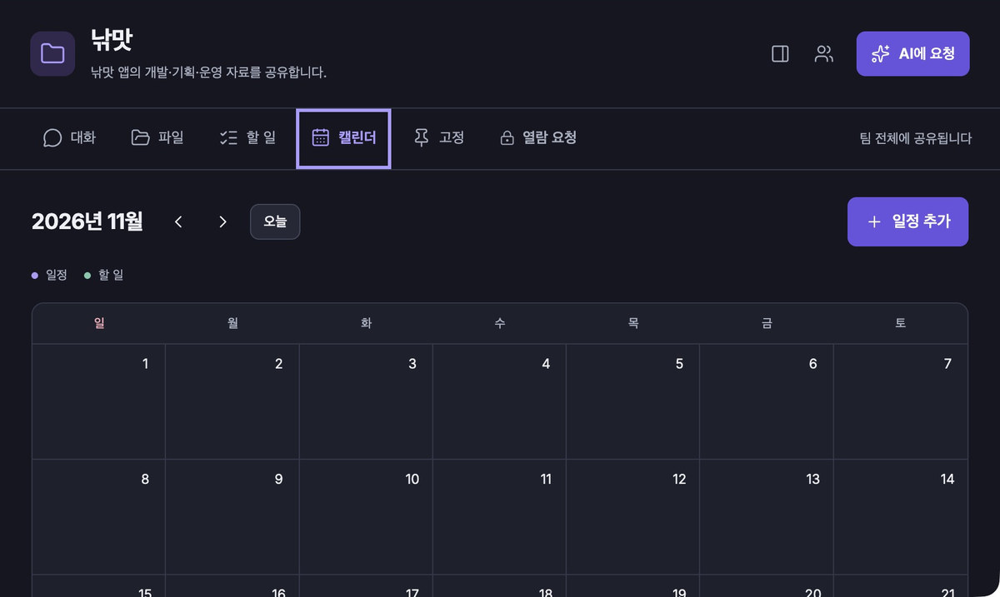
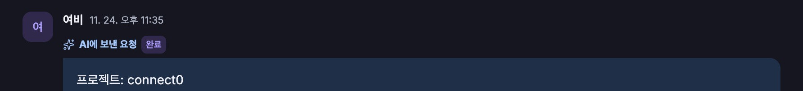
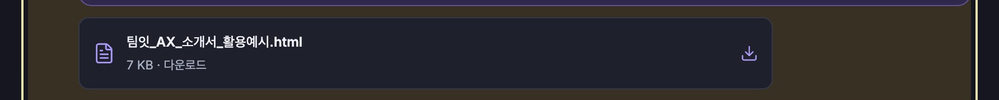

01
자료는 동료의 AI 대화 안에 있습니다
세 명이 각자 AI로 일합니다. 두 명은 Claude, 한 명은 Codex. 필요한 내용은 각자의 AI 대화에 남습니다.
기본 기능 실제 화면

프로젝트마다 파일을 분류해서 저장하고 AI를 통해 검색, 정리됩니다.

프로젝트의 일정과 할 일을 한 달력에서 봅니다.

대화, 할 일, AI 요청, AI 답변, 공유 작업, 파일을 한 번에 찾습니다. 캡처 시점의 최근 내역은 278건입니다.
핵심 기능 3 · 결과 실제 화면

1 24
24

3connect0와의 1:1 DM · 11월 24일 기록 (요청, 답변, 첨부 파일 순서)
작업 현황 실제 화면
 1234
1234
왼쪽 메뉴 › AI 작업 · 서버 주소는 가렸습니다
관리자 입장 실제 화면
 123
123
AI 작업 › 요청 카드 아래쪽 · 11월 24일 기록
목적, 참고 자료, 결과 형식이 빠진 요청이 되풀이되면 그 업무를 예로 가르칩니다.
기록 1 · 공유된 작업 실제 화면
 123
123
낚맛 프로젝트 › 대화 · 11월 16일 기록
기록 2 · 활동 실제 화면
 123
123
왼쪽 메뉴 › 활동 › 활동 내역 · 보고 본문은 가렸습니다
연결 가이드: “팀 전체 활동과 공개 프로젝트 활동은 대표 리포트에 반영됩니다.”